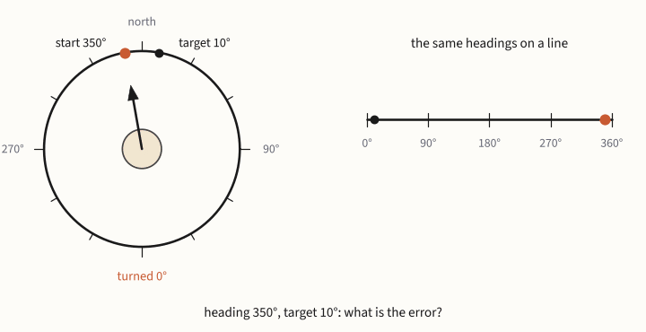
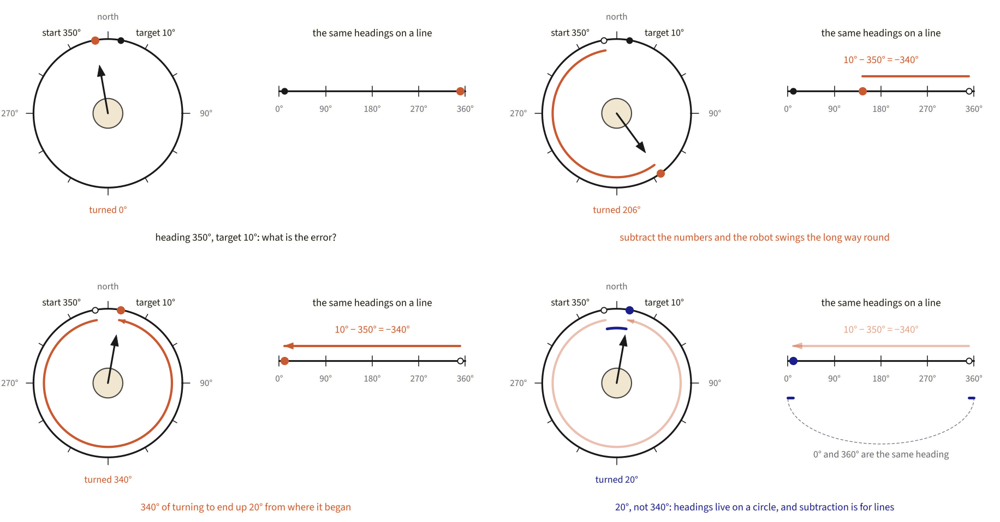
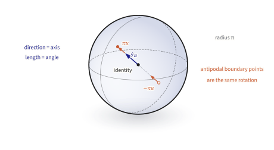
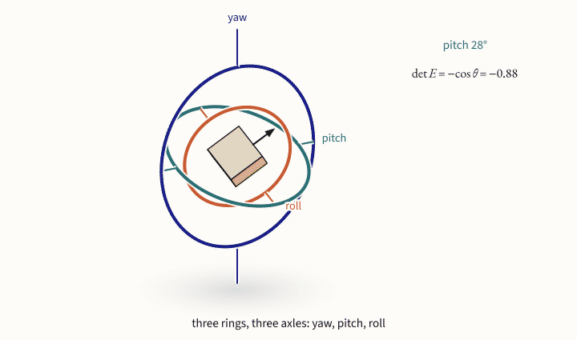
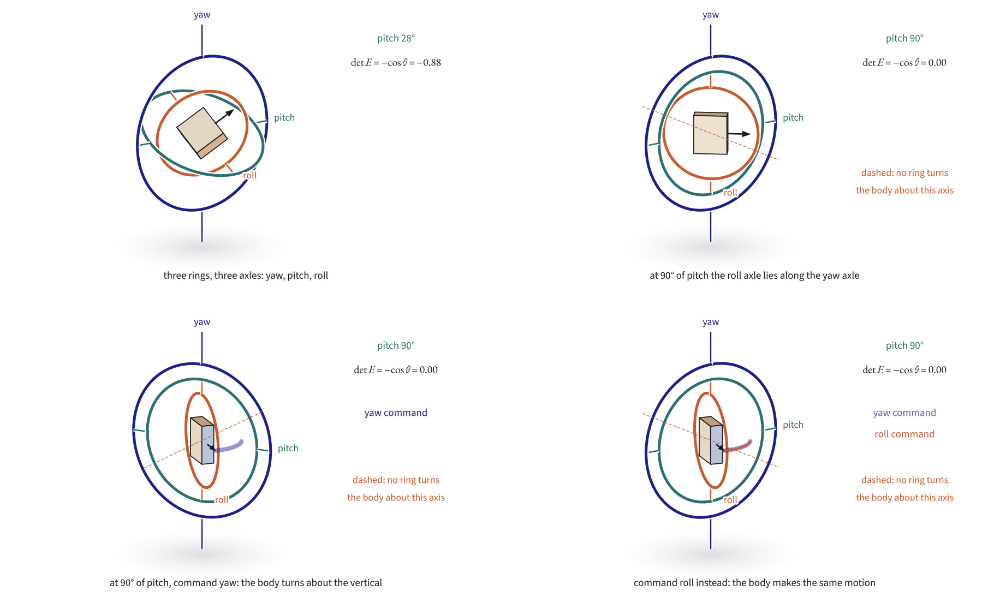
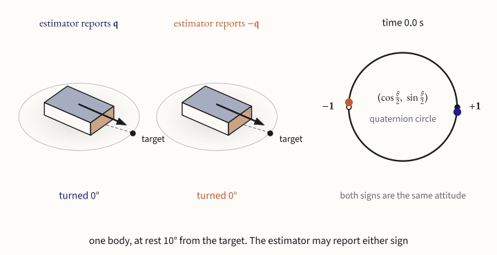
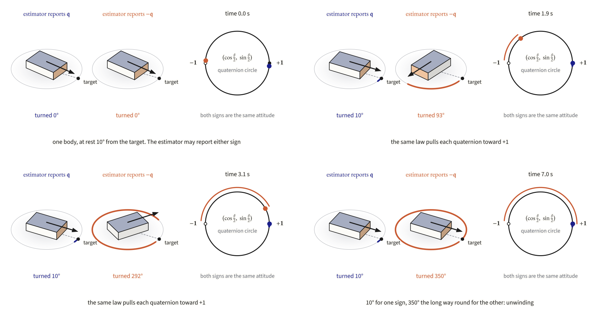
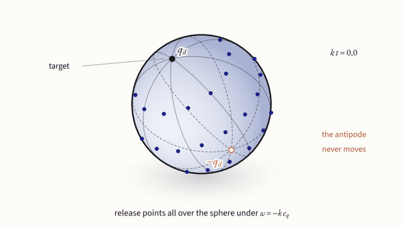
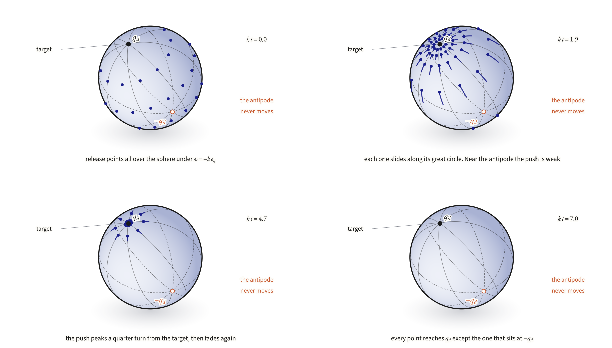

Why coordinate-free?
Notebook (Colab) · Verification script · Skill
A map is not the territory it represents …
Here is a question that sounds too easy. Your robot’s heading is 350°. You want it at 10°. What is the error?
Subtract and you get 340°, so the controller swings the robot almost all the way round (Figure 1.1). The sensible answer is 20° the other way. You already know the patch: wrap the difference into . But notice what the patch admits. Headings do not live on a line. They live on a circle, and subtraction is an operation for lines.
That was one angle. A drone has three, tangled together, and the patches stop working. This chapter shows three ways the tangle bites, proves that one of them cannot be patched by anyone, and then shows the way out that the rest of the book follows.


1.1 The space a rotation lives in
Bolt a frame to a rigid body, the body frame, and another to the world, the world frame. Stack the body’s three axes, written in world coordinates, as the columns of a matrix . The columns are unit length and mutually perpendicular, and they form a right-handed set. Those two facts are the whole definition.
Definition 1.1 (Rotation group).
Nine numbers, six constraints, three degrees of freedom. The set is closed under multiplication and inversion, so it is a group. It is also a smooth, curved, three-dimensional surface sitting inside , which makes it a Lie group. Definition 2.2 takes that phrase apart. For now one picture is enough.
Every rotation is a turn by some angle about some unit axis . Plot it as the point in ordinary space. All rotations then fill a solid ball of radius (Figure 1.2). The center is “no rotation”. Walking outward along a ray turns the body further about that axis.

The catch is at the boundary. Half a turn about leaves the body exactly where half a turn about does. So the point and the point are the same rotation, and the ball’s surface is glued to itself antipodally. No flat space has that shape. Hold on to this picture. Every failure in this chapter is a different way of ignoring the gluing.
Now let the body move. Its angular velocity, measured in its own frame, is a vector . To write the motion of we need to turn that vector into a matrix.
Definition 1.2 (Hat and vee). The hat map sends to the skew-symmetric matrix that performs the cross product with : The vee map is its inverse, . The skew-symmetric matrices form the vector space .
The kinematics of a rigid body are then one line. (Every symbol and convention of the book is collected in Appendix A.)
Look at what is absent. No trigonometry, no denominators, no special cases. Equation (1.1) holds at every attitude. Keep it in mind as the standard the alternatives have to meet.
1.2 Trap one: three angles
Nine numbers for three degrees of freedom feels wasteful, so the first instinct is to use three. The aerospace favorite is yaw, pitch, roll:
Differentiate (1.2) and match it against (1.1). Collect the angles as . The angle rates and the body rate are related by a matrix that depends on where you are:
To integrate the angles you need , and carries a factor . Pitch the nose straight up and it is gone.
Thought experiment 1.1 (A gimbal you can hold). Picture three nested rings (Figure 1.3). The outer ring swivels about a vertical axis: yaw. The middle ring pivots inside it: pitch. The inner ring pivots inside that: roll. Each ring’s axle is carried by the ring outside it.
Now pitch the middle ring by 90°. The roll axle, which rides on the middle ring, swings up until it points along the yaw axle. You now have two rings that do the same thing and no ring that does the third thing. One direction of rotation has become impossible to command. Nothing is wrong with the body. The rings have run out of directions.


This is gimbal lock, and it is not a historical curiosity. Apollo’s inertial platform had three gimbals. During Apollo 11, after Houston warned that a maneuver had come close to lock, Michael Collins asked mission control to send him a fourth gimbal for Christmas.11 The exchange is in the Apollo 11 air-to-ground record at about 105 hours mission time, and is discussed in the Apollo Lunar Surface Journal.
Example 1.1 (A calm body, a panicking chart). A quadrotor pitches up through a maneuver with body rate rad/s. Its angular speed is rad/s, about 40° per second. Unhurried. Take roll and let the pitch reach . Solving (1.3) for the yaw rate gives
which is 2300° per second. The body is doing nothing of the kind (Figure 1.4). A controller that feeds back on sees a violent spin and responds with a violent torque.

You might try a different angle order. It moves the singularity and does not remove it. The ZXY order used for legged robots locks at 90° of roll instead. This is a theorem and not bad luck: no three numbers can cover smoothly without a singularity somewhere.22 Stuelpnagel (1964) showed that three parameters cannot give a global nonsingular parametrization of the rotation group, and that five is the least number that can give a one-to-one global one. The ball of Figure 1.2 says why. A flat three-dimensional chart cannot reproduce that antipodal gluing.
There is a second defect, quieter and just as damaging.
Thought experiment 1.2 (Two labs, one robot). Two labs test the same robot with the same controller, . Lab A’s world frame has pointing up. Lab B mounted the motion-capture system sideways, so its world points up. The robot, the target and the physical error are identical. Do the two controllers command the same torque?
They do not. Rotate the world frame by and the attitudes become and . The physical error, , is unchanged because . But the Euler angles of are not the Euler angles of plus a constant, so the difference changes. Lab B’s robot behaves differently for no physical reason.
A control law whose output does not depend on the choice of world frame is called left-invariant. Euler-angle feedback is not. We will insist on invariance from now on, because a controller that is sensitive to how you bolted down your cameras is not a law about the robot.
1.3 Trap two: four numbers
Quaternions are the standard fix. A unit quaternion , with scalar part , vector part and , is a point on the three-sphere . The rotation by angle about axis is
The kinematics have no singularity. Four numbers and one constraint beat nine numbers and six. So what is the catch?
It is the half angle in (1.4). Turn the body through a full 360° and has only reached 180°, so has arrived at , not back where it started. Since is quadratic in , the two give the same matrix:
Every attitude has two quaternion names. wraps around twice, a double cover.
Thought experiment 1.3 (The plate trick). Balance a plate on your upturned palm. Rotate it a full turn about the vertical, keeping it level, by passing your hand under your armpit. The plate is back where it started. Your arm is not: it is twisted. Now do a second full turn in the same direction, this time swinging your hand over your head. The plate is back again, and your arm has untwisted.
Your arm is keeping track of the quaternion. One turn takes to : same plate, different arm. Two turns bring it home (Figure 1.5). The plate cannot tell the difference. A controller that works with can.
![The plate trick with a ribbon in place of the arm. The plate stays level and only turns about the vertical. The lower dial shows its quaternion, which moves at half the speed of the plate. After one turn the plate is back and the ribbon holds a full twist, with the quaternion at -\mathbf{1}. No motion of the ribbon removes that twist while the plate keeps this attitude. During the second turn in the same direction the plate swings wide and the ribbon comes out flat, with the quaternion back at +\mathbf{1}.](figures/ch01-plate.gif)
![The plate trick with a ribbon in place of the arm. The plate stays level and only turns about the vertical. The lower dial shows its quaternion, which moves at half the speed of the plate. After one turn the plate is back and the ribbon holds a full twist, with the quaternion at -\mathbf{1}. No motion of the ribbon removes that twist while the plate keeps this attitude. During the second turn in the same direction the plate swings wide and the ribbon comes out flat, with the quaternion back at +\mathbf{1}.](figures/ch01-plate-strip.png)
Here is how that becomes a failure. To hold the attitude at the identity, the natural quaternion law is
It drives to zero, with . But is the same attitude, and this law treats it as a place to flee from.
Example 1.2 (Ten degrees or three hundred and fifty). A body with inertia kg·m² sits at rest, 10° of yaw away from the target. The estimator may report either of the two valid quaternions:
Apply (1.5) with , . From the body turns 10° and stops. From it turns 350° the other way to reach the same place (Figure 1.6), and spends 48 times the control effort doing it. Same robot, same physical state, same controller. Only the sign the estimator happened to choose differs.


This is unwinding, named and analyzed by Bhat and Bernstein (2000). The obvious patch is , which always takes the short way. It also makes the torque jump when crosses zero, at 180° of error. Sensor noise there flips the sign back and forth and the motors chatter. Fixing that needs memory: a hysteresis switch, which makes the controller hybrid (Mayhew, Sanfelice and Teel, 2011).
So the patch works, at the price of a discontinuity. Is there a smarter continuous law that avoids both problems? The next section shows there is not, for any representation, and the reason has nothing to do with quaternions.
1.4 The obstruction nobody can engineer around
Go back to the heading on a circle. Suppose a continuous feedback law makes the target heading asymptotically stable. Just clockwise of the target, the flow must push counterclockwise. Just counterclockwise of it, the flow must push clockwise. Now walk around the circle from one side of the target to the other. The flow starts out pointing one way and ends up pointing the other. It is continuous, so somewhere it passes through zero.
That zero is a second equilibrium (Figure 1.7, left). A trajectory that starts there never reaches the target. You did not design it and you cannot remove it. The intermediate value theorem put it there.

The general statement replaces the circle with any compact configuration space.
Theorem 1.3 (Bhat and Bernstein, 2000). Let the state space be a vector bundle over a compact manifold without boundary, for example the attitudes and angular velocities of a rigid body. Then no continuous time-invariant vector field on it has a globally asymptotically stable equilibrium.
The proof idea fits in three sentences. The set of states that converge to an asymptotically stable equilibrium can be shrunk continuously to that equilibrium by running the flow, so it is contractible. If the equilibrium were globally stable, that set would be the whole state space. But a space built over the glued ball of Figure 1.2, or over a sphere, has loops and shells that cannot be shrunk to a point.
This changes what we should ask of a controller. Global asymptotic stability with continuous feedback is off the table for attitudes, for any representation and any cleverness. The best possible continuous result is almost-global stability: every initial condition converges except a thin set, of measure zero, that drains into the extra equilibria. Those equilibria are unstable, so noise knocks the state off them. A good geometric controller achieves exactly this, and says so honestly. Theorem 6.2 is the precise statement.33 On a smooth function with nondegenerate critical points has at least four of them. Koditschek (1989) built attitude error functions with exactly four: the target, and three half-turn attitudes that are unstable.
Compare that with the quaternion law of Example 1.2. It also has an extra equilibrium, at . But that point is the target attitude. The law has placed its unavoidable bad point on top of the place you want to be. The theorem says an unstable equilibrium must exist somewhere. It does not say you must put it there.
1.5 The way out: measure error on the manifold
The three failures have one cause. Each takes a difference of labels, of angles or of quaternion components, and treats it as the error. The remedy is to build the error from the rotations themselves.
Start with a rule the answer must obey. The physical discrepancy between attitude and target is the relative rotation : how the body is turned as seen from the target frame. It equals exactly when they agree, and it passes the two-labs test. So build everything from .
Definition 1.4 (Attitude error). For , the error function, error vector and velocity error are
Each piece has a plain reading. If is a turn by angle about axis , then
is a height: zero at the target, rising to 2 at half a turn away. It plays the role that plays for positions. The vector is its slope. Nudge the attitude by a small body-frame rotation , so that , and the height changes by
So points uphill and is the torque direction that reduces the error fastest. That is a proportional term, derived instead of guessed.
The velocity error needs one more idea. is expressed in the body frame and in the target frame. These are different frames, so subtracting the components directly compares unlike things. The matrix re-expresses in the body frame first. It is our first transport map, and Section 3.4 explains why it has to be there. With it, the two errors fit together exactly as position and velocity error do:
Example 1.3 (The error at gimbal lock, and at half a turn). Take and pitch the body to 90°, where the Euler chart broke: Nothing happens. The error is finite and points about the pitch axis, as it should.
Now take half a turn about the first axis, . Then , the maximum, and is symmetric so . This is the extra equilibrium that Theorem 1.3 promised. It sits at the farthest possible attitude from the target, which is the right place for it.
The same construction works for a direction. A cable, a thrust axis or a pendulum rod is a unit vector , moving as .
Definition 1.5 (Direction error). For ,
Again for the angle between the two directions, and . The vector lies in the tangent plane at , and the feedback moves straight along the great circle toward (Figure 1.8). The one equilibrium besides the target is the antipode , and it is unstable: in terms of the angle, the closed loop is (Figure 1.9).



Pitfall (The restoring torque fades near half a turn). Equation (1.7) has a consequence worth knowing before you fly. The restoring torque is proportional to . It grows up to 90° of error and then shrinks, reaching zero at 180°. A body flipped almost upside down feels almost no restoring torque, and may linger there. Mueller (2018) analyzes this for multicopters and shows the closed loop can stay near a large error for an arbitrarily long time. It is the price of a smooth error function. Section 3.3 compares the alternatives, which reshape so that the push does not fade, and Figure 3.3 and Figure 3.4 show what each one costs. Section 6.3 measures what the fading costs a tracking controller: a fixed delay for every factor of ten closer to half a turn (Figure 6.3). Section 7.7 measures the same effect on a regulator built by linearization.
1.6 Where this leaves us
We now have the pattern for the whole book. Find the space the configuration lives on. Build errors, velocities and derivatives from the objects themselves. Choose coordinates only to compute, never to define.
The pieces we have used so far were pulled out of a hat: the hat map, the vector , the transport map . The next two chapters derive them. Chapter 2 sets up the manifolds a robot needs, and Chapter 3 explains how to take derivatives and compare velocities on them. After that the same handful of tools gives equations of motion without angles (Chapter 4), controllers with almost-global guarantees (Chapter 6), linearizations that are valid everywhere (Chapter 7), estimators whose error dynamics do not depend on the state, and optimizers that never leave the manifold (Chapter 13).
Exercises
Exercise 1.1. Starting from (1.2), compute and confirm (1.3), including . Then repeat for the order and find where it is singular.
Exercise 1.2. Make the two-labs experiment concrete. Pick , and a world-frame change . Compute before and after the change, and confirm that is unchanged.
Exercise 1.3. Reproduce Example 1.2 in the notebook. How does the ratio of control effort between the two starts depend on ? Then implement the patch, add measurement noise, and start the body at 179° of error.
Exercise 1.4. Write out the circle argument of Section 1.4 as a proof. Where does it use continuity? Give a discontinuous law on the circle that is globally asymptotically stable, and say what goes wrong with it under noise.
Exercise 1.6. For the sphere, show that gives , where is the angle between and . Conclude that is an unstable equilibrium. How long does it take to get from to ?
Notes and sources
The comparison of Euler-angle and geometric formulations follows Siravuru (2019, ch. 4), who carries it out for a 3D pendulum over a grid of initial attitudes. Chaturvedi, Sanyal and McClamroch (2011) is the best single survey of rigid-body attitude control and of the pitfalls described here. The error functions (1.6) are those of Bullo and Lewis (2005) and Lee, Leok and McClamroch (2010).
- S. P. Bhat and D. S. Bernstein, “A topological obstruction to continuous global stabilization of rotational motion and the unwinding phenomenon”, Systems & Control Letters 39(1), 2000.
- F. Bullo and A. D. Lewis, Geometric Control of Mechanical Systems, Springer, 2005.
- N. A. Chaturvedi, A. K. Sanyal and N. H. McClamroch, “Rigid-body attitude control”, IEEE Control Systems Magazine 31(3), 2011.
- D. E. Koditschek, “The application of total energy as a Lyapunov function for mechanical control systems”, Contemporary Mathematics 97, 1989.
- T. Lee, M. Leok and N. H. McClamroch, “Geometric tracking control of a quadrotor UAV on SE(3)”, IEEE Conference on Decision and Control, 2010.
- C. G. Mayhew, R. G. Sanfelice and A. R. Teel, “Quaternion-based hybrid control for robust global attitude tracking”, IEEE Transactions on Automatic Control 56(11), 2011.
- M. W. Mueller, “Multicopter attitude control for recovery from large disturbances”, arXiv:1802.09143, 2018.
- A. Siravuru, Geometric Control and Learning for Dynamic Legged Robots, PhD thesis, Carnegie Mellon University, 2019.
- J. Stuelpnagel, “On the parametrization of the three-dimensional rotation group”, SIAM Review 6(4), 1964.